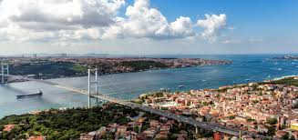
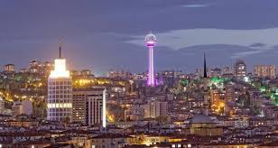
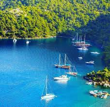
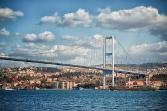
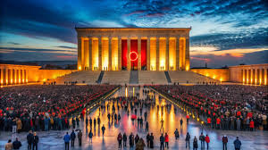
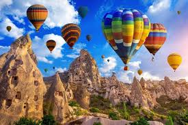
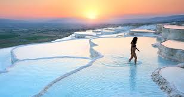

Turkey’s 3 Major Cities



Istanbul, formerly known as Constantinople, served as the capital of the Roman, Byzantine, and Ottoman Empires. It is famous for its rich history and iconic landmarks such as Hagia Sophia and the Blue Mosque, attracting millions of tourists each year.
Ankara, the current capital of Turkey, holds great importance as the center of the country’s government. It is also home to Anıtkabir, the mausoleum of Mustafa Kemal Atatürk, the founder of modern Turkey. The city is known for its cultural and historical institutions, including the Museum of Anatolian Civilizations.
Antalya, often referred to as the tourism capital of Turkey, is a breathtaking city on the Mediterranean coast. Its picturesque old town, Kaleiçi, and stunning Düden Waterfalls are major attractions. Antalya is also home to historical sites like the Aspendos Ancient Theater, which reflects the city’s rich past.
Turkey is a country deeply rooted in its traditions and culture, which are reflected in everyday life. Hospitality is a core value, and Turkish people are known for warmly welcoming guests, often serving them the best food and drinks. Traditional clothing, especially during special occasions like henna nights and weddings, showcases the rich cultural heritage with intricate designs and embroidery.
Historically, Turkey has been a cradle of civilizations, hosting the Hittites, Lydians, Persians, Romans, and Ottomans, all of which have left significant marks on the culture and architecture. Education is highly valued, with primary education being compulsory and free for all citizens. Turkey also boasts numerous prestigious universities that contribute to its strong academic reputation.
Turkish cuisine is renowned for its variety and rich flavors. One of the most popular dishes is mantı, a type of dumpling served with yogurt and a tomato-based sauce, originating from Kayseri. Baklava, a sweet pastry soaked in syrup, is a signature dessert of Turkish cuisine, particularly from Gaziantep.
Street foods like simit, a sesame-covered bread ring, are widely enjoyed, while börek, a savory pastry filled with cheese, spinach, or meat, is a favorite for breakfast or snacks. Sarma, made from grape leaves stuffed with rice and spices, reflects the delicate flavors of Turkish culinary traditions. Meat dishes like döner and İskender are iconic, with İskender being served with yogurt and a rich tomato sauce, originating from Bursa.

Tourist Attractions




Turkey is home to some of the world’s most remarkable tourist destinations. The Bosphorus Strait, which connects Europe and Asia, runs through Istanbul and is one of the busiest trade routes globally. Its natural beauty and strategic importance make it a must-see for visitors.
In Ankara, Anıtkabir stands as a symbol of Turkey’s independence and a tribute to Mustafa Kemal Atatürk, the nation’s founder. This grand mausoleum attracts visitors who wish to learn about Turkey’s modern history.
In the Cappadocia region, the Fairy Chimneys are a natural wonder formed by the erosion of volcanic rocks over thousands of years. Their unique shapes and the region’s hot air balloon tours make it a magical destination.
Pamukkale Travertines, located in Denizli, are natural terraces formed by calcium-rich thermal waters. This UNESCO World Heritage Site offers a stunning combination of white travertine terraces and thermal pools, making it one of Turkey’s most visited attractions.